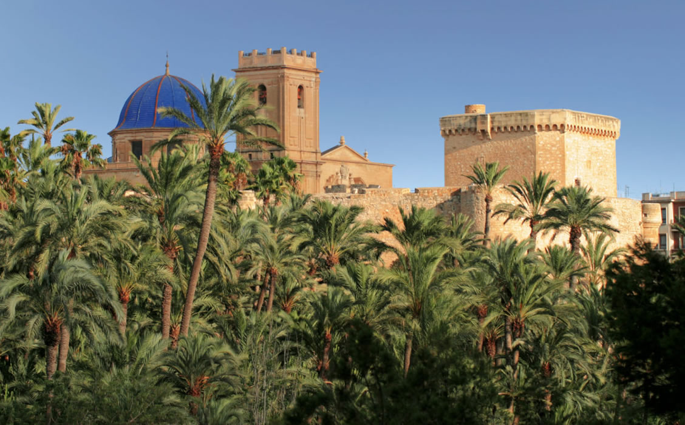

Historia de la Ciudad
Elche ha tenido dos emplazamientos a lo largo de su historia. El primero en el yacimiento de l’Alcudia, situado dos kilómetros al sur del actual núcleo urbano, habitado desde el neolítico hasta la etapa visigoda y que ofrecía la ventaja estratégica de su fácil defensa gracias al río Vinalopó. El núcleo primitivo se desarrolló hasta configurar en el siglo V a. C. la ciudad ibérica de Helike, que perduró hasta la invasión cartaginesa en el 280 a.C. Fue la época esplendorosa de la cultura ibérica, en la que esculpió la Dama de Elche. En el años 209 a.C. la ciudad ibérica se romaniza, y ya en el siglo I a. C. adquiere el título de Colonia Iulia Illice Augusta. Desde aquí en adelante fueron constantes las destrucciones y reconstrucciones a consecuencia de la llegada de los bárbaros y la etapa final de los visigodos. Con la llegada de los árabes la ciudad se traslada a su emplazamiento actual entre los siglos VIII y IX, al barrio conocido como la Vila Murada. La conquista cristiana de Jaime I, en 1265, obligó a los musulmanes a marcharse al Raval de Sant Joan. A principios del siglo XVII, Elche pierde un tercio de su población a consecuencia de la expulsión de los moriscos. En el siglo XIX surgió la importante actividad alpargatera, origen de la actual industria del calzado que potenció el crecimiento de la ciudad.